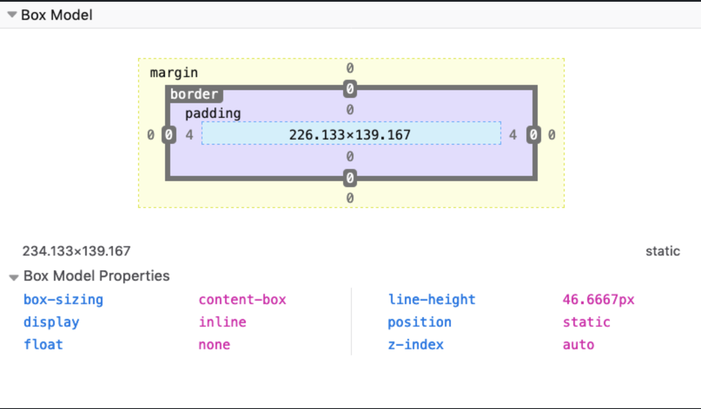
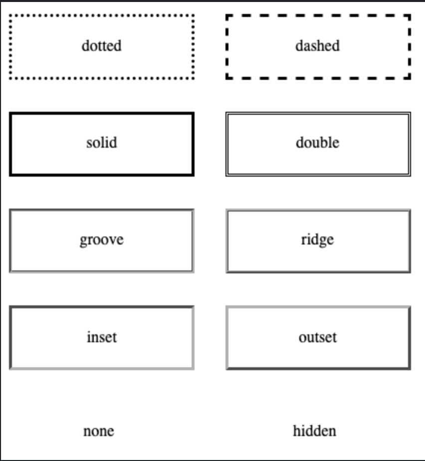
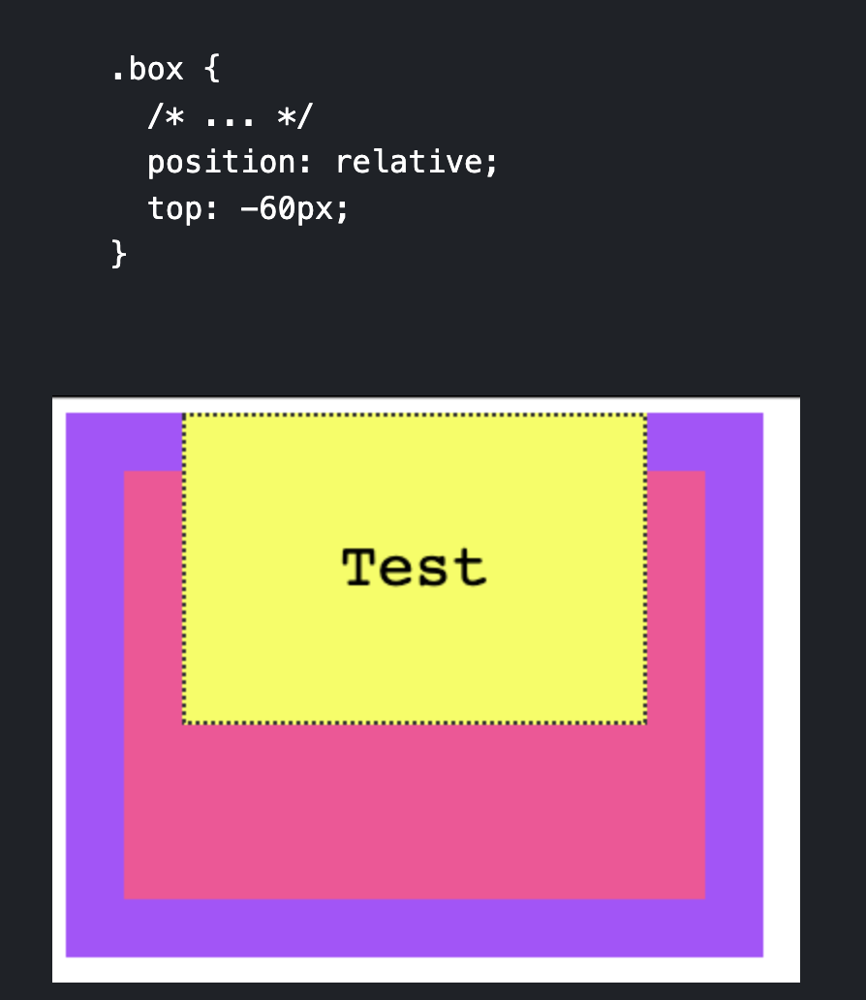
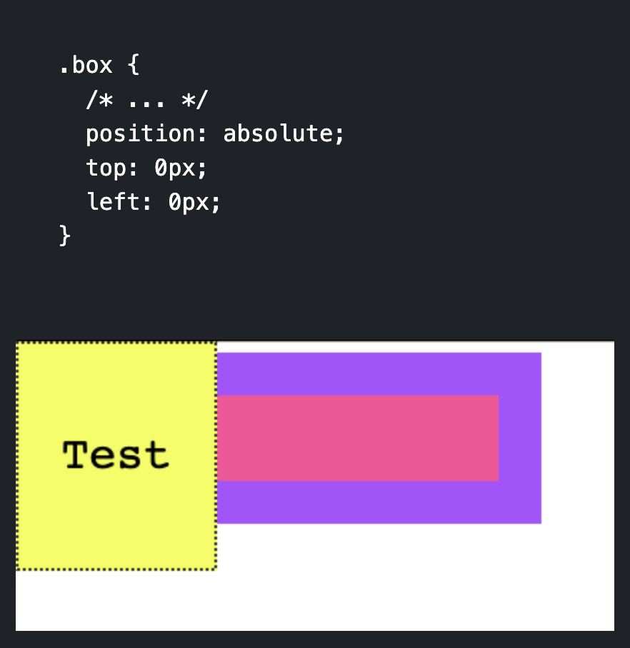
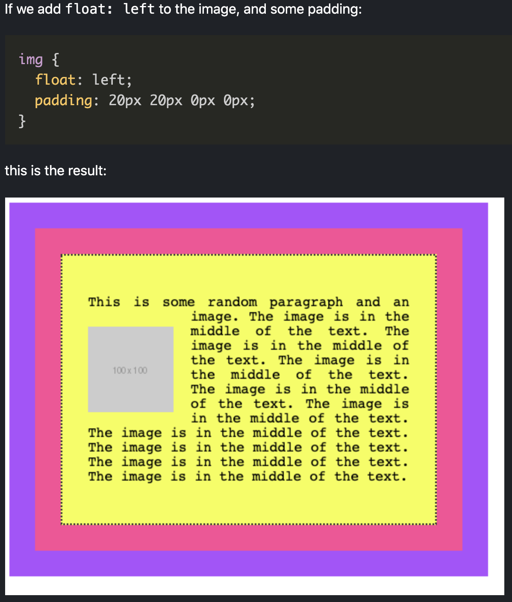
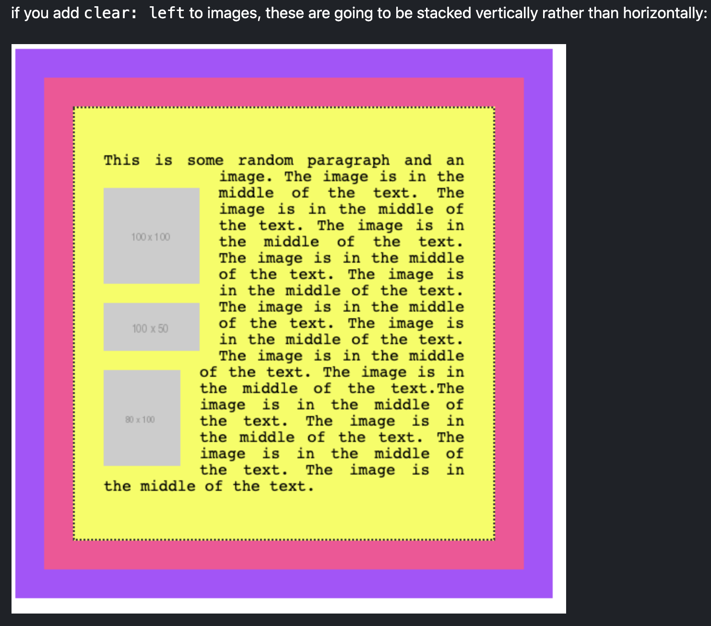

More CSS
Box Model
- In HTML and CSS, every element is essentially a box
- The box model explains how elements are presented and manipulated in CSS
- There are 4 areas in the CSS box model
- Content Area
- Padding Area
- Border Area
- Margin Area
- Ex.

- Setting width or height sets the content area not the padding, border, or margin areas
Border
- The border is the thin area between the padding and margin
- Essentially, editing this area allows for editing the perimeter of the element
- Can work on borders using these properties:
- border-style
- border-color
- border-width
- border-radius
- Can set images for borders with border-image
Border-style
- border-style property allows for picking the style of border
- Ex.
- dotted
- dashed
- solid
- double

Border-width
- border-width allows for specifying the width of hte lines of the border
- word values are:
- length values using "em" or "px" can also be used
Border-color
- border-color is utilized to set the color of the border
- Default color is the element's text color
Border-radius
Border example with border-radius, border-width, border style, and border-color
Margin
Some Test for margin centering using "auto"
- Margin is also allowed to have negative values on the properties which makes it extend the opposite way
Padding
- Padding is the same as margin except that it adds space to the area inside the element border
- Margin adds space outside the element border
- Padding adds space inside the element border
- Similar to margin, it has 4 properties:
- padding-top
- padding-right
- padding-bottom
- padding-left
- Ex.
Some text to demonstrate padding
Box Sizing
Example testing out "border-box"
Display
- "Display" property determines how the element is displayed by the browser
- 3 types of display elements (excluding "grid", "flex", "table")
- block
- inline
- none
Inline
- With "inline" as the property value, the elements don't have any margin or padding applied as well as height and width
- It appears "inline" with the elements that precede and come after it
Block
- Some elements are automatically set as "block" elements by the browser
- Block elements are those that take up 100% of the width of the screen
- They also stack on top of each other when placed one after another
- The width and height properties are actually utilized and can also set the margin and padding
None
- Display "none" hides the visibility of the element on the page
- The element will still be in the HTML code, but will not be rendered by the browser
Positioning
- Property that determines where elements appear on the screen and how they appear
- Can have 5 values:
- static
- relative
- absolute
- fixed
- sticky
Static
- This is the default setting that follows the normal page structure created from and HTML document
Relative
- Allows for positioning using 4 properties:
- top
- left
- right
- bottom
- Called offset properties tha accept a length as value
- Position relative allows for positioning the element relative to the parent element that is containing it

- Here we can see that the .box class (yellow) can be specified its position relative to the parent container which is the pink box
Absolute
- Position absolute takes the element outside of the normal HTML flow and allows for manual positioning
- Only the (x, y) starting point is preserved
- The starting point is the starting point of the closest container that is not static

Fixed
- Position fixed is the same as position absolute except that the starting coordinates (x, y) are always positioned relative to the window
instead of the first non-static container
- Also fixed elements are not affected by scrolling, they will remain on the page even if scrolling occurs
Sticky
- Position sticky is the same as fixed except that it stays at the top of the screen when the screen's scrolling has reached that element's scrolling point
- This means that it will act like static until its scrolling point is reached and then act like fixed at the top of the screen if the user keeps scrolling
Floating
- Floating allows you to remove an element from the normal page flow and used to be the old way to create "modern" layouts
- Kind of not utilized as much because of "Grid" and "Flexbox"
- Supports 3 values:
- left
- right
- none (default)
- Normally, the browser renders things like imgs and spans inline together one after another, meaning imgs will show in the middle of the text or not formatted
- Can be fixed with floats
- Ex.

- Floated elements are removed from the normal flow of the page and the content flows around it
Clearing
- Floating multiple elements will make them just stack next to each other horizontally
- If space runs out at it will start a new line
- There is a property called "clear" that remedy's this and allows for horizontally floated elements to be stacked vertically
- Ex.

- For clearing use:
- "left" to clear left floats
- "right" to clear right floats
- "both" to clear both left and right flaots
- "none" (default)
Tables
- Tables used to be heavily utilized to create fancy page layouts but are not really utilized except for creating tables because of "grid" and "flexbox"
- Can easily style every other row to have a different color utilizing :nth_child(odd) or :nth_child(even) selector
- Ex.
| Name |
Age |
| Flavio |
36 |
| Roger |
7 |
| Syd |
10 |